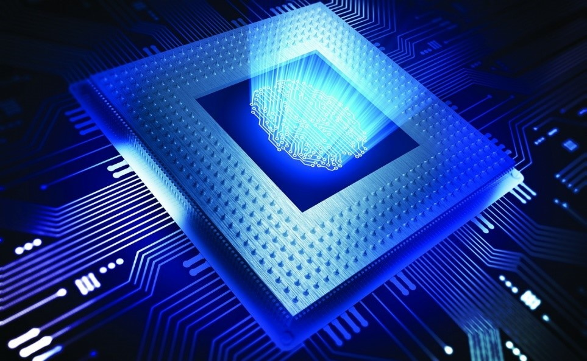

Оптические компьютеры
-
Оптический микрочип позволил ускорить создание квантового компьютера
Первый в мире оптический микрочип был разработан международной командой исследователей, что помогло сдвинуть с мертвой точки прогресс в создании квантового компьютера. Основой появления квантового компьютера являются оптические микрочипы, которые обнаруживают и управляют сжатым вакуумом – определенным состоянием света, с помощью которого и будет работать квантовый компьютер.
Микрочип был создан учеными в 2018 году из Германии и Австралии. Размер устройства составляет 1,5 см в ширину, 5 см в длину и 0,5 см в толщину. Компоненты микрочипа будут взаимодействовать различными способами со светом, проводя его, как электрические волны.
Исследование, финалом которого стало создание квантового чипа, помогло преодолеть одну из серьезных проблем, стоящих на пути разработки полноценного квантового компьютера.